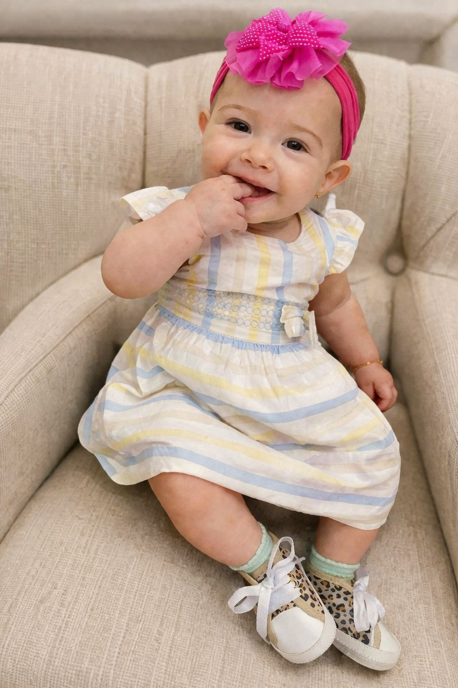
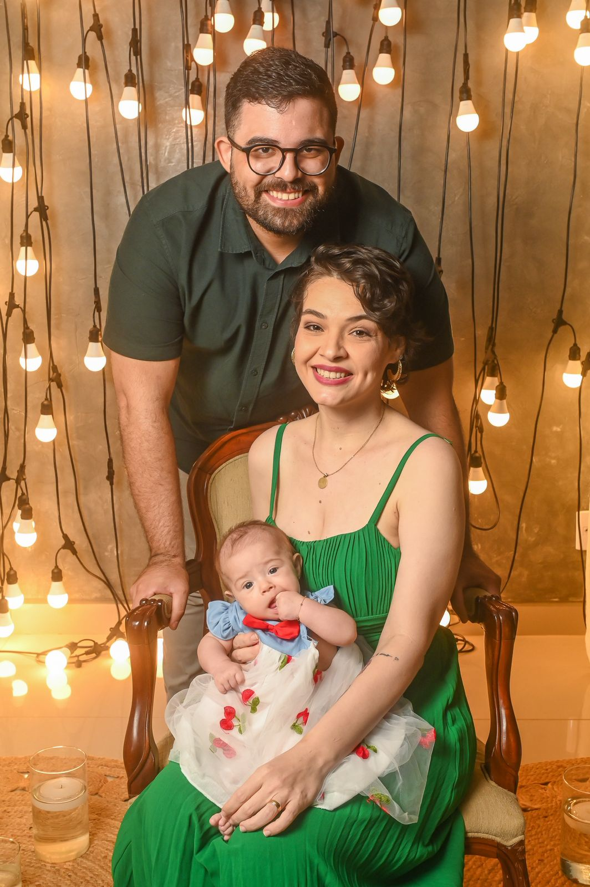

Recordações
Um convite leve, delicado e cheio de amor
Preparamos este cantinho com carinho para compartilhar esse momento tão especial da vida da nossa pequena Laura Graziela. Cada detalhe foi pensado para transmitir ternura, fé e alegria.
